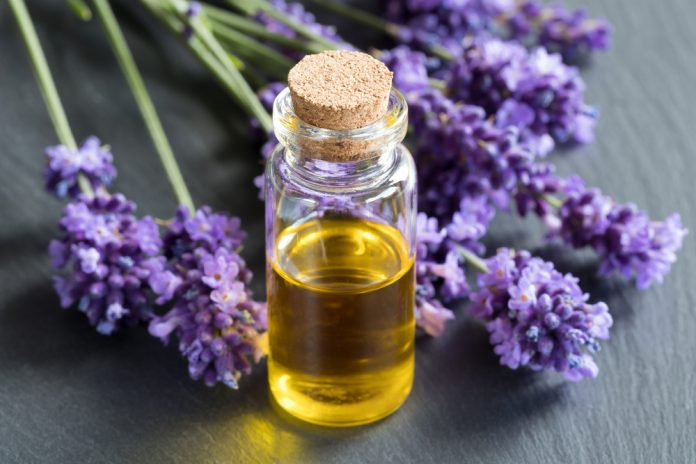

L'huile essentielle de Lavande vraie est depuis longtemps connue pour ses vertus réparatrices. Apaisante cutanée, l'huile essentielle de Lavande vraie est traditionnellement utilisée dans les soins des peaux sensibles ou à problèmes. Ses propriétés calmantes et relaxantes permettent d'utiliser l'huile essentielle de Lavande vraie en diffusion pour procurer sérénité et bien-être.
Beauté
Régénérante puissante et apaisante, l'huile essentielle de Lavande est une des grandes huiles des soins de la peau. Elle calme les petites irritations et coups de soleil, adoucit les peaux sensibles et purifie en douceur les peaux sujettes aux boutons. Elle est également traditionnellement conseillée pour éloigner les insectes et les poux.
UTILISATIONS
L'huile essentielle de Lavande vraie est traditionnellement utilisée dans les cas suivants : Peaux sensibles, peaux irritées, feu du rasoir, coups de soleil Peaux à problèmes, acné, boutons Piqûres d'insectes, démangeaisons, poux
Santé
En santé, l'huile essentielle de lavande vraie est reconnue pour ces propriétés :
Antispasmodique puissante, décontractante musculaire Cicatrisante et régénératrice cutanée puissante
Apaisante, anti-inflammatoire, antalgique
Hypotensive, calmante puissante et équilibrante du système nerveux
Antiseptique général et pulmonaire